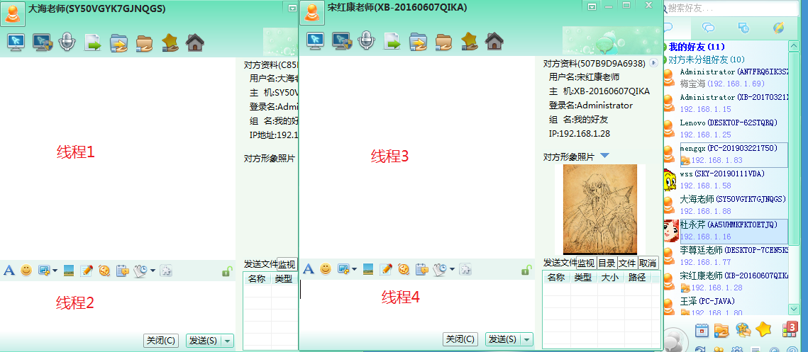
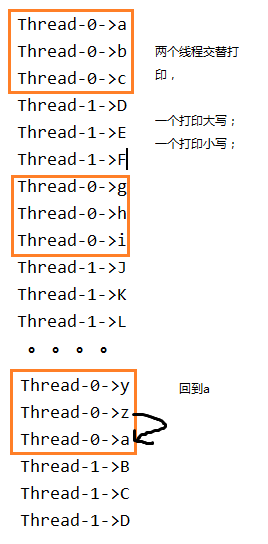

第13章 多线程
学习目标
-
说出进程的概念
-
说出线程的概念
-
能够理解并发与并行的区别
-
能够开启新线程
-
能够描述Java中多线程运行原理
-
能够使用继承类的方式创建多线程
-
能够使用实现接口的方式创建多线程
-
能够说出实现接口方式的好处
-
能够解释安全问题的出现的原因
-
能够使用同步代码块解决线程安全问题
-
能够使用同步方法解决线程安全问题
-
能够说出线程6个状态的名称
-
能够理解线程通信概念
-
能够理解等待唤醒机制
-
能够说出线程的生命周期
第十三章 多线程
我们在之前，学习的程序在没有跳转语句的前提下，都是由上至下依次执行，那现在想要设计一个程序，边打游戏边听歌，怎么设计？
要解决上述问题,咱们得使用多进程或者多线程来解决.
13.1 相关概念
13.1.1 并发与并行（了解）
- 并行（parallel）：指多个事件任务在同一时刻发生（同时发生）。指在同一时刻，有多条指令在多个处理器上同时执行。单核CPU同一时刻只能处理一条指令，所以单核CPU做不到并行处理。
- 并发（concurrency）：指两个或多个事件在同一个微小的时间段内发生。指在同一个时刻只能有一条指令执行，但多个进程的指令被快速轮换执行，使得在宏观上具有多个进程同时执行的效果。程序并发执行可以在有限条件下，充分利用CPU资源，这是我们研究的重点。

在操作系统中，安装了多个程序，并发指的是在一段时间内宏观上有多个程序同时运行，这在单 CPU 系统中，每一时刻只能有一个程序执行，即微观上这些程序是分时的交替运行，只不过是给人的感觉是同时运行，那是因为分时交替运行的时间是非常短的。
而在多个 CPU 系统中，则这些可以并发执行的程序便可以分配到多个处理器上（CPU），实现多任务并行执行，即利用每个处理器来处理一个可以并发执行的程序，这样多个程序便可以同时执行。目前电脑市场上说的多核 CPU，便是多核处理器，核越多，并行处理的程序越多，能大大的提高电脑运行的效率。
注意：单核处理器的计算机肯定是不能并行的处理多个任务的，只能是多个任务在单个CPU上并发运行。同理，线程也是一样的，从宏观角度上理解线程是并行运行的，但是从微观角度上分析却是串行运行的，即一个线程一个线程的去运行，当系统只有一个CPU时，线程会以某种顺序执行多个线程，我们把这种情况称之为线程调度。
单核CPU：只能并发
多核CPU：并行+并发
例子：
- 并行：多项工作一起执行，之后再汇总，例如：泡方便面，电水壶烧水，一边撕调料倒入桶中
- 并发：同一时刻多个线程在访问同一个资源，多个线程对一个点，例如：春运抢票、电商秒杀...
13.1.2 线程与进程
程序：为了完成某个任务和功能，选择一种编程语言编写的一组指令的集合。
软件：1个或多个应用程序+相关的素材和资源文件等构成一个软件系统。
进程：进程是对一个程序运行过程（创建-运行-消亡）的描述，系统会为每个运行的程序建立一个进程，并为进程分配独立的系统资源，比如内存空间等资源。
线程：线程是进程中的一个执行单元，负责完成执行当前程序的任务，一个进程中至少有一个线程。一个进程中是可以有多个线程的，这时这个应用程序也可以称之为多线程程序。多线程使得程序可以并发执行，充分利用CPU资源。
面试题：进程是操作系统调度和分配资源的最小单位，线程是CPU调度的最小单位。不同的进程之间是不共享内存的。进程之间的数据交换和通信的成本是很高。不同的线程是共享同一个进程的内存的。当然不同的线程也有自己独立的内存空间。对于方法区，堆中中的同一个对象的内存，线程之间是可以共享的，但是栈的局部变量永远是独立的。
例如：
每个应用程序的运行都是一个进程
我们可以再电脑底部任务栏，右键----->打开任务管理器,可以查看当前任务的进程：

一个应用程序的多次运行，就是多个进程

一个进程中包含多个线程

13.1.3多线程的优点与应用场景
主要优点：
- 充分利用CUP空闲时间片，用尽可能短的时间完成用户的请求。也就是使程序的响应速度更快 。
应用场景：
- 多任务处理。多个用户请求服务器，服务端程序可以开启多个线程分别处理每个用户的请求，互不影响。
- 单个大任务处理。下载一个大文件，可以开启多个线程一起下载，减少整体下载时间。
13.1.4 线程调度
指CPU资源如何分配给不同的线程。常见的两种线程调度方式：
分时调度
所有线程轮流使用 CPU 的使用权，平均分配每个线程占用 CPU 的时间。
抢占式调度
优先让优先级高的线程使用 CPU，如果线程的优先级相同，那么会随机选择一个(线程随机性)，Java采用的是抢占式调度方式。
抢占式调度详解
大部分操作系统都支持多进程并发运行，现在的操作系统几乎都支持同时运行多个程序。比如：现在我们上课一边使用编辑器，一边使用录屏软件，同时还开着画图板，dos窗口等软件。此时，这些程序是在同时运行，”感觉这些软件好像在同一时刻运行着“。
实际上，CPU(中央处理器)使用抢占式调度模式在多个线程间进行着高速的切换。对于CPU的一个核而言，某个时刻，只能执行一个线程，而 CPU的在多个线程间切换速度相对我们的感觉要快，看上去就是在同一时刻运行。 其实，多线程程序并不能提高程序的运行速度，但能够提高程序运行效率，让CPU的使用率更高。

13.2 线程的创建与启动
java虚拟机是支持多线程的，当运行Java程序时，至少已经有一个线程了，那就是main线程。

那么如何创建和启动一个新的线程呢？创建线程的简单方式有两种：
13.2.1 继承Thread类
Java中java.lang.Thread是表示线程的类，每个Thread类或其子类的实例代表一个线程对象。
通过继承Thread类来创建并启动多线程的步骤:
- 定义Thread类的子类，并重写该类的run()方法，该run()方法的方法体就代表了线程需要完成的任务,因此把run()方法称为线程执行体。
- 创建Thread子类的实例，即创建了线程对象
- 调用线程对象的start()方法来启动该线程
自定义线程类：
public class MyThread extends Thread { //定义指定线程名称的构造方法 public MyThread(String name) { //调用父类的String参数的构造方法，指定线程的名称 super(name); } /** * 重写run方法，完成该线程执行的逻辑 */ public void run() { for (int i = 0; i < 10; i++) { System.out.println(getName()+"：正在执行！"+i); } }}测试类：创建线程对象并启动线程
xxxxxxxxxxpublic class Demo01 { public static void main(String[] args) { //创建自定义线程对象 MyThread mt = new MyThread("新的线程！"); //开启新线程 mt.start(); //在主方法中执行for循环 for (int i = 0; i < 10; i++) { System.out.println("main线程！"+i); } }}多线程执行情况分析

注意事项：
- 手动调用run方法不是启动线程的方式，只是普通方法调用。
- start方法启动线程后，run方法会由JVM调用执行。
- 不要重复启动同一个线程，否则抛出异常
IllegalThreadStateException - 不要使用Junit单元测试多线程，不支持，主线程结束后会调用
System.exit()直接退出JVM;
13.2.2 实现Runnable接口
Java有单继承的限制，当我们无法继承Thread类时，那么该如何做呢？在核心类库中提供了Runnable接口，我们可以实现Runnable接口，重写run()方法，然后再通过Thread类的对象代理启动和执行我们的线程体run()方法
通过实现Runnable接口创建线程并启动的步骤:
- 定义Runnable接口的实现类，并重写该接口的run()方法，该run()方法的方法体同样是该线程的线程执行体。
- 创建Runnable实现类的实例，并以此实例作为Thread的target来创建Thread对象，该Thread对象才是真正 的线程对象。
- 调用线程对象的start()方法来启动线程。
自定义线程任务类：
xxxxxxxxxx public class MyRunnable implements Runnable{ public void run() { for (int i = 0; i < 20; i++) { System.out.println(Thread.currentThread().getName()+" "+i); } } }测试类：创建线程对象并启动线程
xxxxxxxxxx public class Demo { public static void main(String[] args) { //创建自定义类对象 线程任务对象 MyRunnable mr = new MyRunnable(); //创建线程对象 Thread t = new Thread(mr, "小强"); t.start(); for (int i = 0; i < 20; i++) { System.out.println("旺财 " + i); } } }13.2.3 两种创建线程方式比较
Thread类本身也是实现了Runnable接口的，run方法都来自Runnable接口，run方法也是真正要执行的线程任务。
xxxxxxxxxxpublic class Thread implements Runnable {}因为Java类是单继承的，所以继承Thread的方式有单继承的局限性，但是使用上更简单一些。
实现Runnable接口的方式，避免了单继承的局限性，并且可以使多个线程对象共享一个Runnable实现类（线程任务类）对象，从而方便在多线程任务执行时共享数据。
13.2.4 匿名内部类对象创建线程
匿名内部类对象的方式创建线程，并不是一种新的创建线程的方式，只是在线程任务只需执行一次的情况下，我们无需单独创建线程类，可以采用匿名对象的方式：
xxxxxxxxxxnew Thread("新的线程！"){ public void run() { for (int i = 0; i < 10; i++) { System.out.println(getName()+"：正在执行！"+i); } }}.start();xxxxxxxxxxnew Thread(new Runnable(){ public void run() { for (int i = 0; i < 10; i++) { System.out.println(Thread.currentThread().getName()+"：" + i); } }}).start();13.3 Thread类
13.3.1 构造方法
- public Thread() :分配一个新的线程对象。
- public Thread(String name) :分配一个指定名字的新的线程对象。
- public Thread(Runnable target) :分配一个带有指定目标新的线程对象。
- public Thread(Runnable target,String name) :分配一个带有指定目标新的线程对象并指定名字。
13.3.2 线程使用基础方法
public void run() :此线程要执行的任务在此处定义代码。
public String getName() :获取当前线程名称。
public static Thread currentThread() :返回对当前正在执行的线程对象的引用。
public final boolean isAlive()：测试线程是否处于活动状态。如果线程已经启动且尚未终止，则为活动状态。
public final int getPriority() ：返回线程优先级
public final void setPriority(int newPriority) ：改变线程的优先级
- 每个线程都有一定的优先级，优先级高的线程将获得较多的执行机会。每个线程默认的优先级都与创建它的父线程具有相同的优先级。Thread类提供了setPriority(int newPriority)和getPriority()方法类设置和获取线程的优先级，其中setPriority方法需要一个整数，并且范围在[1,10]之间，通常推荐设置Thread类的三个优先级常量：
- MAX_PRIORITY（10）：最高优先级
- MIN _PRIORITY （1）：最低优先级
- NORM_PRIORITY （5）：普通优先级，默认情况下main线程具有普通优先级。
xpublic static void main(String[] args) { Thread t = new Thread(){ public void run(){ System.out.println(getName() + "的优先级：" + getPriority()); } }; t.setPriority(Thread.MAX_PRIORITY); t.start(); System.out.println(Thread.currentThread().getName() +"的优先级：" + Thread.currentThread().getPriority());}
13.3.3 线程控制常见方法
public void start() :导致此线程开始执行; Java虚拟机调用此线程的run方法。
public static void sleep(long millis) :线程睡眠，使当前正在执行的线程以指定的毫秒数暂停（暂时停止执行）。
public static void yield()：线程礼让，yield只是让当前线程暂时失去执行权，让系统的线程调度器重新调度一次，希望优先级与当前线程相同或更高的其他线程能够获得执行机会，但是这个不能保证，完全有可能的情况是，当某个线程调用了yield方法暂停之后，线程调度器又将其调度出来重新执行。
void join() ：加入线程，当前线程中加入一个新线程，等待加入的线程终止后再继续执行当前线程。
void join(long millis) ：等待该线程终止的时间最长为 millis 毫秒。如果millis时间到，将不再等待。
void join(long millis, int nanos) ：等待该线程终止的时间最长为 millis 毫秒 + nanos 纳秒。
public final void stop()：强迫线程停止执行。 该方法具有不安全性，已被弃用，最好不要使用。
- 调用 stop() 方法会立刻停止 run() 方法中剩余的全部工作，包括在 catch 或 finally 语句中的，并抛出ThreadDeath异常(通常情况下此异常不需要显示的捕获)，因此可能会导致一些清理性的工作的得不到完成，如文件，数据库等的关闭。
- 调用 stop() 方法会立即释放该线程所持有的所有的锁，导致数据得不到同步，出现数据不一致的问题。
public void interrupt()：中断线程，实际上是给线程打上一个中断的标记，并不会真正使线程停止执行。
public static boolean interrupted()：检查线程的中断状态，调用此方法会清除中断状态（标记）。
public boolean isInterrupted()：检查线程中断状态，不会清除中断状态（标记）
public void setDaemon(boolean on)：将线程设置为守护线程或用户线程。必须在线程启动之前设置，否则会报
IllegalThreadStateException异常。- 守护线程，主要为其他线程服务，当程序中没有非守护线程执行时，守护线程也将终止执行。JVM垃圾回收器也是守护线程。
public boolean isDaemon()：检查当前线程是否为守护线程。
示例
代码：倒计时
public static void main(String[] args) { for (int i = 10; i>=0; i--) { System.out.println(i); try { Thread.sleep(1000); } catch (InterruptedException e) { e.printStackTrace(); } } System.out.println("新年快乐！"); }示例代码：强行加塞
主线程：打印[1,10]，每隔10毫秒打印一个数字，
自定义线程类：不停的问是否结束，输入Y或N，
现在当主线程打印完5之后，就让自定义线程类加塞，直到自定义线程类结束，主线程再继续。
import java.util.Scanner; public class TestJoin { public static void main(String[] args) { ChatThread t = new ChatThread(); t.start(); for (int i = 1; i <= 10; i++) { System.out.println("main:" + i); try { Thread.sleep(10); } catch (InterruptedException e) { e.printStackTrace(); } //当main打印到5之后，需要等join进来的线程停止后才会继续了。 if(i==5){ try { t.join(); } catch (InterruptedException e) { e.printStackTrace(); } } } } } class ChatThread extends Thread{ public void run(){ Scanner input = new Scanner(System.in); while(true){ System.out.println("是否结束？（Y、N）"); char confirm = input.next().charAt(0); if(confirm == 'Y' || confirm == 'y'){ break; } } input.close(); } }示例代码：友谊赛
案例：编写龟兔赛跑多线程程序，设赛跑长度为30米
兔子的速度是10米每秒，兔子每跑完10米休眠的时间10秒
乌龟的速度是1米每秒，乌龟每跑完10米的休眠时间是1秒
要求：要等兔子和乌龟的线程结束，主线程（裁判）才能公布最后的结果。
public class Racer extends Thread { private String name;//运动员名字 private long runTime;//每米需要时间，单位毫秒 private long restTime;//每10米的休息时间，单位毫秒 private long distance;//全程距离，单位米 private long totalTime;//跑完全程的总时间 public Racer(String name, long distance, long runTime, long restTime) { super(); this.name = name; this.distance = distance; this.runTime = runTime; this.restTime = restTime; } @Override public void run() { long sum = 0; long start = System.currentTimeMillis(); while (sum < distance) { System.out.println(name + "正在跑..."); try { Thread.sleep(runTime);// 每米距离，该运动员需要的时间 } catch (InterruptedException e) { return ; } sum++; try { if (sum % 10 == 0 && sum < distance) { // 每10米休息一下 System.out.println(name+"已经跑了"+sum+"米正在休息...."); Thread.sleep(restTime); } } catch (InterruptedException e) { return ; } } long end = System.currentTimeMillis(); totalTime = end - start; System.out.println(name+"跑了"+sum+"米，已到达终点，共用时"+totalTime/1000.0+"秒"); } public long getTotalTime() { return totalTime; } }public class TestJoin { public static void main(String[] args) { Racer rabbit = new Racer("兔子", 30, 100, 10000); Racer turtoise = new Racer("乌龟", 30, 1000, 1000); rabbit.start(); turtoise.start(); //因为要兔子和乌龟都跑完，才能公布结果 try { rabbit.join(); } catch (InterruptedException e) { e.printStackTrace(); } try { turtoise.join(); } catch (InterruptedException e) { e.printStackTrace(); } System.out.println("比赛结束"); if(rabbit.getTotalTime()==turtoise.getTotalTime()){ System.out.println("平局"); }else if(rabbit.getTotalTime()<turtoise.getTotalTime()){ System.out.println("兔子赢"); }else{ System.out.println("乌龟赢"); } } }示例代码：冠军赛
案例：编写龟兔赛跑多线程程序，设赛跑长度为30米
兔子的速度是10米每秒，兔子每跑完10米休眠的时间10秒
乌龟的速度是1米每秒，乌龟每跑完10米的休眠时间是1秒
要求：只要兔子和乌龟中有人到达终点，就宣布比赛结束，没到达终点的也停下来。
public class Player extends Thread{ private String name;//运动员名字 private long runTime;//每米需要时间，单位毫秒 private long restTime;//每10米的休息时间，单位毫秒 private long distance;//全程距离，单位米 private boolean flag = true; private volatile boolean ended = false; public Player(String name, long distance, long runTime, long restTime) { super(); this.name = name; this.distance = distance; this.runTime = runTime; this.restTime = restTime; } @Override public void run() { long sum = 0; while (sum < distance && flag) { System.out.println(name + "正在跑..."); try { Thread.sleep(runTime);// 每米距离，该运动员需要的时间 } catch (InterruptedException e) { break ; } sum++; try { if (sum % 10 == 0 && sum < distance && flag) { // 每10米休息一下 System.out.println(name+"已经跑了"+sum+"米正在休息...."); Thread.sleep(restTime); } } catch (InterruptedException e) { break ; } } ended = sum == distance ? true : false; System.out.println(name+"跑了"+sum+"米"); } public void setFlag(boolean flag) { this.flag = flag; } public boolean isEnded() { return ended; } }public class TestStop { public static void main(String[] args) { Thread.currentThread().setPriority(Thread.MAX_PRIORITY); Player rabbit = new Player("兔子", 30, 100, 10000); Player turtoise = new Player("乌龟", 30, 1000, 1000); rabbit.start(); turtoise.start(); while(true){ if(rabbit.isEnded() || turtoise.isEnded()){ rabbit.setFlag(false); turtoise.setFlag(false); rabbit.interrupt();//中断休眠 turtoise.interrupt();//中断休眠 //只要有人跑完，就结束比赛，并公布结果 break; } } System.out.println("比赛结束"); if(rabbit.isEnded() && turtoise.isEnded()){ System.out.println("平局"); }else if(rabbit.isEnded()){ System.out.println("兔子赢"); }else{ System.out.println("乌龟赢"); } } }volatile的作用是确保不会因编译器的优化而省略某些指令，volatile的变量是说这变量可能会被意想不到地改变，每次都小心地重新读取这个变量的值，而不是使用保存在寄存器里的备份，这样，编译器就不会去假设这个变量的值了。
守护线程
public class TestThread { public static void main(String[] args) { MyDaemon m = new MyDaemon(); m.setDaemon(true); m.start(); for (int i = 1; i <= 100; i++) { System.out.println("main:" + i); } } } class MyDaemon extends Thread { public void run() { while (true) { System.out.println("我一直守护者你..."); try { Thread.sleep(1); } catch (InterruptedException e) { e.printStackTrace(); } } } }
13.4 线程生命周期
13.6.1 传统线程模型的五种线程状态
传统线程模型中把线程的生命周期描述为五种状态：新建（New）、就绪（Runnable）、运行（Running）、阻塞（Blocked）、死亡（Dead）。CPU需要在多条线程之间切换，于是线程状态会多次在运行、阻塞、就绪之间切换。

1. 新建
当一个Thread类或其子类的对象被声明并创建时，新生的线程对象处于新建状。此时它和其他Java对象一样，仅仅由JVM为其分配了内存，并初始化了实例变量的值。此时的线程对象并没有任何线程的动态特征，程序也不会执行它的线程体run()。
2. 就绪
但是当线程对象调用了start()方法之后，线程就从新建状态转为就绪状态。这时线程并未执行，只是具备了运行的条件，还需要获取CPU资源后才能执行。
3. 运行
如果处于就绪状态的线程获得了CPU资源，开始执行run()方法的线程体代码，则该线程处于运行状态。如果计算机只有一个CPU，在任何时刻只有一个线程处于运行状态，如果计算机有多个处理器，将会有多个线程并行(Parallel)执行。
当然，美好的时光总是短暂的，而且CPU讲究雨露均沾。对于抢占式策略的系统而言，系统会给每个可执行的线程一个小时间段来处理任务，当该时间用完，系统会剥夺该线程所占用的资源，让其回到就绪状态等待下一次被调度。此时其他线程将获得执行机会，而在选择下一个线程时，系统会适当考虑线程的优先级。
4. 阻塞
当在运行过程中的线程遇到某些特殊情况时，线程会临时放弃CPU资源，不再执行，即进入阻塞状态。比如：线程调用了sleep()方法，会主动放弃所占用的CPU资源。
5. 死亡
线程完成任务结束或意外终止后，线程就处于死亡状态。
13.6.2 JDK定义的六种线程状态（了解）
在java.lang.Thread类内部定义了一个枚举类用来描述线程的六种状态：
public enum State {
NEW,
RUNNABLE,
BLOCKED,
WAITING,
TIMED_WAITING,
TERMINATED;
}
跟传统线程模型中的线程状态不同的是：
枚举类中没有区分
就绪和运行状态，而是定义成了一种状态Runnable。- 因为对于Java对象来说，只能标记为可运行，至于什么时候运行，不是JVM来控制的了，是OS来进行调度的，而且时间非常短暂，因此对于Java对象的状态来说，无法区分。只能我们人为的进行想象和理解。
传统模型中的阻塞状态在枚举类的定义中又细分为了三种状态的：
BLOCKED、WAITING、TIMED_WAITING。BLOCKED：是指互有竞争关系的几个线程，其中一个线程占有锁对象时，其他线程只能等待锁。只有获得锁对象的线程才能有执行机会。TIMED_WAITING：当前线程执行过程中遇到Thread类的sleep或join，Object类的wait，LockSupport类的park方法，并且在调用这些方法时，设置了时间，那么当前线程会进入TIMED_WAITING，直到时间到，或被中断。WAITING：当前线程执行过程中遇到遇到Object类的wait，Thread类的join，LockSupport类的park方法，并且在调用这些方法时，没有指定时间，那么当前线程会进入WAITING状态，直到被唤醒。- 通过Object类的wait进入
WAITING状态的要有Object的notify/notifyAll唤醒； - 通过Condition的await进入
WAITING状态的要有Conditon的signal方法唤醒； - 通过LockSupport类的park方法进入
WAITING状态的要有LockSupport类的unpark方法唤醒 - 通过Thread类的join进入
WAITING状态，只有调用join方法的线程对象结束才能让当前线程恢复；
- 通过Object类的wait进入
说明：当从
WAITING或TIMED_WAITING恢复到Runnable状态时，如果发现当前线程没有得到监视器锁，那么会立刻转入BLOCKED状态。

13.5 线程安全
当我们使用多个线程访问同一资源（可以是同一个变量、同一个文件、同一条记录等）的时候，但是如果多个线程中对资源有读和写的操作，就会出现前后数据不一致问题，这就是线程安全问题。
案例：三个窗口售卖共100张火车票。
13.5.1 线程安全问题引出
局部变量不能共享
示例代码：
package com.atguigu.safe; public class SaleTicketDemo1 { public static void main(String[] args) { Window w1 = new Window(); Window w2 = new Window(); Window w3 = new Window(); w1.start(); w2.start(); w3.start(); } } class Window extends Thread{ public void run(){ int total = 100; while(total>0) { System.out.println(getName() + "卖出一张票，剩余:" + --total); } } }结果：发现卖出300张票。
问题：局部变量是每次调用方法都是独立的，那么每个线程的run()的total是独立的，不是共享数据。
不同对象的实例变量不共享
package com.atguigu.safe; public class SaleTicketDemo2 { public static void main(String[] args) { TicketSaleThread t1 = new TicketSaleThread(); TicketSaleThread t2 = new TicketSaleThread(); TicketSaleThread t3 = new TicketSaleThread(); t1.start(); t2.start(); t3.start(); } } class TicketSaleThread extends Thread{ private int total = 10; public void run(){ while(total>0) { System.out.println(getName() + "卖出一张票，剩余:" + --total); } } }结果：发现卖出300张票。
问题：不同的实例对象的实例变量是独立的。
静态变量是共享的
示例代码：
package com.atguigu.safe; public class SaleTicketDemo3 { public static void main(String[] args) { TicketThread t1 = new TicketThread(); TicketThread t2 = new TicketThread(); TicketThread t3 = new TicketThread(); t1.start(); t2.start(); t3.start(); } } class TicketThread extends Thread{ private static int total = 10; public void run(){ while(total>0) { try { Thread.sleep(10);//加入这个，使得问题暴露的更明显 } catch (InterruptedException e) { e.printStackTrace(); } System.out.println(getName() + "卖出一张票，剩余:" + --total); } } }结果：发现卖出近100张票。
问题（1）：但是有重复票或负数票问题。
原因：线程安全问题
问题（2）：如果要考虑有两场电影，各卖100张票，这场卖完就没票了，新的线程对象也没有票卖了
原因：TicketThread类的静态变量，是所有TicketThread类的对象共享。本来成员变量就是run方法共享的数据，再用static不合适。
同一个对象的实例变量共享
示例代码：多个Thread线程使用同一个Runnable对象
package com.atguigu.safe; public class SaleTicketDemo3 { public static void main(String[] args) { TicketSaleRunnable tr = new TicketSaleRunnable(); Thread t1 = new Thread(tr,"窗口一"); Thread t2 = new Thread(tr,"窗口一"); Thread t3 = new Thread(tr,"窗口一"); t1.start(); t2.start(); t3.start(); } } class TicketSaleRunnable implements Runnable{ private int total = 10; public void run(){ while(total>0) { try { Thread.sleep(10);//加入这个，使得问题暴露的更明显 } catch (InterruptedException e) { e.printStackTrace(); } System.out.println(Thread.currentThread().getName() + "卖出一张票，剩余:" + --total); } } }结果：发现卖出近100张票。
问题：但是有重复票或负数票问题。
原因：线程安全问题
13.5.2 线程安全问题原因分析
出现重复打印票和负数的问题分析（跟阻塞没关系）：

总结：线程安全问题的出现因为具备了以下条件
- 多线程执行
- 共享数据
- 多条语句操作共享数据
13.5.3 线程安全问题解决方式
上述线程安全问题的必备条件1和2是我们需要的，要解决只能从第三个点上想办法。要解决上述多线程并发访问一个资源的安全性问题:也就是解决重复票与不存在票问题，Java中提供了线程同步机制来解决。

Java中常使用关键字synchronized 来实现同步机制：
同步方法：synchronized 关键字直接修饰方法，表示同一时刻只有一个线程能进入这个方法，其他线程在外面等着。
public synchronized void method(){
可能会产生线程安全问题的代码
}
同步代码块：synchronized 关键字可以用于某个区块前面，表示只对这个区块的资源实行互斥访问。 格式:
synchronized(同步锁){
需要同步操作的代码
}
13.5.4 锁对象选择
同步锁对象：
- 锁对象可以是任意类型。
- 多个线程对象 要使用同一把锁。
1、同步代码块的锁对象
- 静态方法中：使用当前类的Class对象
- 非静态方法中：习惯上先考虑this，但是要注意是否同一个this
代码示例：
//售票线程任务类
class SaleTicket implements Runnable {
//票数
private int count = 100;//共享资源
@Override
public void run() {
while (true) {
//同步代码块，this为锁对象
synchronized (this) {
if (count > 0) {
System.out.println(Thread.currentThread().getName() + "--" + count);
count--;
}
}
}
}
}
//测试类
public class DemoSaleTicket {
public static void main(String[] args) {
//创建线程任务对象
SaleTicket st = new SaleTicket(ticket);
//创建售票线程对象，并启动线程
new Thread(st).start();
new Thread(st).start();
}
}
代码改进：
//售票线程任务类
class SaleTicket implements Runnable {
private int count = 100;
//售票线程任务
@Override
public void run() {
while (true) {
synchronized (this) {
sell();//调用售票方法
}
}
}
//提取出售票方法
private void sell() {
if (count > 0) {
System.out.println(Thread.currentThread().getName() + "--" + count);
count--;
}
}
}
//测试类
public class DemoSaleTicket {
public static void main(String[] args) {
//创建线程任务对象
SaleTicket st = new SaleTicket(ticket);
//创建售票线程对象，并启动线程
new Thread(st).start();
new Thread(st).start();
}
}
2、同步方法的锁对象
- 静态方法：当前类的Class对象
- 非静态方法：this
示例代码：
public class SaleTicket implements Runnable {
private int count = 100;
@Override
public void run() {
while (true) {
//直接调用同步方法
sell();
}
}
//将售票方法改进为：同步方法，非静态的同步方法的锁对象默认为this
private synchronized void sell() {
if (count > 0) {
System.out.println(Thread.currentThread().getName() + "--" + count);
count--;
}
}
}
示例改造：
//共享资源类（将共享数据与同步方法封装到一个类中）
class Ticket {
private int count=100;//票数
//****同步方法，非静态同步方法的锁对象默认为this
public synchronized void sell() {
if (count > 0) {
System.out.println(Thread.currentThread().getName() + "--" + count--);
}
}
public int getCount() {
return count;
}
}
//线程任务类
class SaleTicketRunnable implements Runnable {
//共享的资源
private Ticket ticket;
//通过构造器传入共享资源
public SaleTicketRunnable(Ticket ticket) {
this.ticket = ticket;
}
//线程任务
@Override
public void run() {
while (true) {
//售票
ticket.sell();
if(ticket.getCount()<=0)//售完跳出循环，结束线程任务
break;
}
}
}
//测试类
public class DemoSaleTicket {
public static void main(String[] args) {
//创建共享资源
Ticket ticket = new Ticket();
//创建资源操作线程对象
SaleTicket st = new SaleTicket(ticket);
//创建售票线程对象，并启动线程
new Thread(st).start();
new Thread(st).start();
}
}
锁的范围太小：不能解决安全问题，要同步所有操作共享资源的语句。
锁的范围太大：因为一旦某个线程抢到锁，其他线程就只能等待，所以范围太大，效率会降低，不能合理利用CPU资源。
13.5.5 如何编写多线程的程序呢？
原则：
- 线程操作资源类
- 高内聚低耦合
步骤：
- 编写资源类
- 考虑线程安全问题，在资源类中考虑使用同步代码块或同步方法
public class TestSynchronized {
public static void main(String[] args) {
// 2、创建资源对象
Ticket ticket = new Ticket();
// 3、启动多个线程操作资源类的对象
Thread t1 = new Thread("窗口一") {
public void run() {
while (true) {
try {
Thread.sleep(10);// 加入这个，使得问题暴露的更明显
ticket.sale();
} catch (Exception e) {
e.printStackTrace();
break;
}
}
}
};
Thread t2 = new Thread("窗口二") {
public void run() {
while (true) {
try {
Thread.sleep(10);// 加入这个，使得问题暴露的更明显
ticket.sale();
} catch (Exception e) {
e.printStackTrace();
break;
}
}
}
};
Thread t3 = new Thread(new Runnable() {
public void run() {
while (true) {
try {
Thread.sleep(10);// 加入这个，使得问题暴露的更明显
ticket.sale();
} catch (Exception e) {
e.printStackTrace();
break;
}
}
}
}, "窗口三");
t1.start();
t2.start();
t3.start();
}
}
// 1、编写资源类
class Ticket {
private int total = 10;
public synchronized void sale() {
if(total<=0){
throw new RuntimeException(Thread.currentThread().getName() + "发现没有票了");
}
System.out.println(Thread.currentThread().getName() + "卖出一张票，剩余:" + --total);
}
public int getTotal() {
return total;
}
}
13.5.6 单例设计模式的线程安全问题
1、饿汉式没有线程安全问题
饿汉式：上来就创建对象
package com.atguigu.thread4;
public class OnlyOneDemo {
public static void main(String[] args) {
OnlyOne o1 = OnlyOne.INSTANCE;
OnlyOne o2 = OnlyOne.INSTANCE;
System.out.println(o1);
System.out.println(o2);
System.out.println(o1==o2);
}
}
class OnlyOne{
public static final OnlyOne INSTANCE = new OnlyOne();
private OnlyOne(){
}
}
2、懒汉式线程安全问题
public class Singleton {
private static Singleton ourInstance;
public static Singleton getInstance() {
//一旦创建了对象，之后再次获取对象，都不会再进入同步代码块，提升效率
if (ourInstance == null) {
//同步锁，锁住判断语句与创建对象并赋值的语句
synchronized (Singleton.class) {
if (ourInstance == null) {
ourInstance = new Singleton();
}
}
}
return ourInstance;
}
private Singleton() {
}
}
//测试类
public class Demo {
public static void main(String[] args) {
//开启多个线程获取单例
new SingletonThread().start();
new SingletonThread().start();
new SingletonThread().start();
}
}
//线程类
class SingletonThread extends Thread{
@Override
public void run() {
Singleton instance = Singleton.getInstance();
System.out.println(instance);//打印对象地址，查看每个线程获取的实例是否同一个
}
}
13.6 等待唤醒机制
13.6.1 线程间通信
为什么要处理线程间通信：
多个线程在处理同一个资源，但是处理的动作（线程的任务）却不相同。而多个线程并发执行时, 在默认情况下CPU是随机切换线程的，当我们需要多个线程来共同完成一件任务，并且我们希望他们有规律的执行, 那么多线程之间需要一些通信机制，可以协调它们的工作，以此来帮我们达到多线程共同操作一份数据。
比如：线程A用来生成包子的，线程B用来吃包子的，包子可以理解为同一资源，线程A与线程B处理的动作，一个是生产，一个是消费，此时B线程必须等到A线程完成后才能执行，那么线程A与线程B之间就需要线程通信，即—— 等待唤醒机制。
13.6.2 等待唤醒机制
什么是等待唤醒机制
这是多个线程间的一种协作机制。谈到线程我们经常想到的是线程间的竞争（race），比如去争夺锁，但这并不是故事的全部，线程间也会有协作机制。
就是在一个线程满足某个条件时，就进入等待状态（wait()/wait(time)）， 等待其他线程执行完他们的指定代码过后再将其唤醒（notify()）;或可以指定wait的时间，等时间到了自动唤醒；在有多个线程进行等待时，如果需要，可以使用 notifyAll()来唤醒所有的等待线程。wait/notify 就是线程间的一种协作机制。
- wait：线程不再活动，不再参与调度，进入 wait set 中，因此不会浪费 CPU 资源，也不会去竞争锁了，这时的线程状态即是 WAITING或TIMED_WAITING。它还要等着别的线程执行一个特别的动作，也即是“通知（notify）”或者等待时间到，在这个对象上等待的线程从wait set 中释放出来，重新进入到调度队列（ready queue）中
- notify：则选取所通知对象的 wait set 中的一个线程释放；
- notifyAll：则释放所通知对象的 wait set 上的全部线程。
注意：
被通知线程被唤醒后也不一定能立即恢复执行，因为它当初中断的地方是在同步块内，而此刻它已经不持有锁，所以她需要再次尝试去获取锁（很可能面临其它线程的竞争），成功后才能在当初调用 wait 方法之后的地方恢复执行。
总结如下：
- 如果能获取锁，线程就从 WAITING 状态变成 RUNNABLE（可运行） 状态；
- 否则，线程就从 WAITING 状态又变成 BLOCKED（等待锁） 状态
调用wait和notify方法需要注意的细节
- wait方法与notify方法必须要由同一个锁对象调用。因为：对应的锁对象可以通过notify唤醒使用同一个锁对象调用的wait方法后的线程。
- wait方法与notify方法是属于Object类的方法的。因为：锁对象可以是任意对象，而任意对象的所属类都是继承了Object类的。
- wait方法与notify方法必须要在同步代码块或者是同步函数中使用。因为：必须要通过锁对象调用这2个方法。
13.6.3 生产者与消费者问题
等待唤醒机制可以解决经典的“生产者与消费者”的问题。
生产者与消费者问题（英语：Producer-consumer problem），也称有限缓冲问题（英语：Bounded-buffer problem），是一个多线程同步问题的经典案例。该问题描述了两个（多个）共享固定大小缓冲区的线程——即所谓的“生产者”和“消费者”——在实际运行时会发生的问题。生产者的主要作用是生成一定量的数据放到缓冲区中，然后重复此过程。与此同时，消费者也在缓冲区消耗这些数据。该问题的关键就是要保证生产者不会在缓冲区满时加入数据，消费者也不会在缓冲区中空时消耗数据。
生产者与消费者问题中其实隐含了两个问题：
线程安全问题：因为生产者与消费者共享数据缓冲区，不过这个问题可以使用同步解决。
线程的协调工作问题：
- 要解决该问题，就必须让生产者线程在缓冲区满时等待(wait)，暂停进入阻塞状态，等到下次消费者消耗了缓冲区中的数据的时候，通知(notify)正在等待的线程恢复到就绪状态，重新开始往缓冲区添加数据。同样，也可以让消费者线程在缓冲区空时进入等待(wait)，暂停进入阻塞状态，等到生产者往缓冲区添加数据之后，再通知(notify)正在等待的线程恢复到就绪状态。通过这样的通信机制来解决此类问题。
一个厨师一个服务员问题
案例：有家餐馆的取餐口比较小，只能放10份快餐，厨师做完快餐放在取餐口的工作台上，服务员从这个工作台取出快餐给顾客。现在有1个厨师和1个服务员。
package com.atguigu.thread5;
public class TestCommunicate {
public static void main(String[] args) {
// 1、创建资源类对象
Workbench workbench = new Workbench();
// 2、创建和启动厨师线程
new Thread("厨师") {
public void run() {
while (true) {
workbench.put();
}
}
}.start();
// 3、创建和启动服务员线程
new Thread("服务员") {
public void run() {
while (true) {
workbench.take();
}
}
}.start();
}
}
// 1、定义资源类
class Workbench {
private static final int MAX_VALUE = 10;
private int num;
public synchronized void put() {
if (num >= MAX_VALUE) {
try {
this.wait();
} catch (InterruptedException e) {
e.printStackTrace();
}
}
num++;
System.out.println(Thread.currentThread().getName() + "制作了一份快餐，现在工作台上有：" + num + "份快餐");
this.notify();
}
public synchronized void take() {
if (num <= 0) {
try {
this.wait();
} catch (InterruptedException e) {
e.printStackTrace();
}
}
num--;
System.out.println(Thread.currentThread().getName() + "取走了一份快餐，现在工作台上有：" + num + "份快餐");
this.notify();
}
}
多个厨师多个服务员问题
案例：有家餐馆的取餐口比较小，只能放10份快餐，厨师做完快餐放在取餐口的工作台上，服务员从这个工作台取出快餐给顾客。现在有多个厨师和多个服务员。
package com.atguigu.thread5;
public class TestCommunicate2 {
public static void main(String[] args) {
// 1、创建资源类对象
WindowBoard windowBoard = new WindowBoard();
// 2、创建和启动厨师线程
// 3、创建和启动服务员线程
Cook c1 = new Cook("张三",windowBoard);
Cook c2 = new Cook("李四",windowBoard);
Waiter w1 = new Waiter("小红",windowBoard);
Waiter w2 = new Waiter("小绿",windowBoard);
c1.start();
c2.start();
w1.start();
w2.start();
}
}
//1、定义资源类
class WindowBoard {
private static final int MAX_VALUE = 10;
private int num;
public synchronized void put() {
while (num >= MAX_VALUE) {//必须循环判断。
try {
this.wait();//wait后会释放锁，Cooker1线程释放后，Cooker2线程获得锁（本应Waiter获得）进来后if继续wait，释放锁，Cooker1又快速获得锁，继续向下执行。。。
} catch (InterruptedException e) {
e.printStackTrace();
}
}
num++;
System.out.println(Thread.currentThread().getName() + "制作了一份快餐，现在工作台上有：" + num + "份快餐");
this.notifyAll();
}
public synchronized void take() {
while (num <= 0) {
try {
this.wait();
} catch (InterruptedException e) {
e.printStackTrace();
}
}
num--;
System.out.println(Thread.currentThread().getName() + "取走了一份快餐，现在工作台上有：" + num + "份快餐");
this.notifyAll();
}
}
//2、定义厨师类
class Cook extends Thread{
private WindowBoard windowBoard;
public Cook(String name,WindowBoard windowBoard) {
super(name);
this.windowBoard = windowBoard;
}
public void run(){
while(true) {
windowBoard.put();
}
}
}
//3、定义服务员类
class Waiter extends Thread{
private WindowBoard windowBoard;
public Waiter(String name,WindowBoard windowBoard) {
super(name);
this.windowBoard = windowBoard;
}
public void run(){
while(true) {
windowBoard.take();
}
}
}
练习
1、要求两个线程，同时打印字母，每个线程都能连续打印3个字母。两个线程交替打印，一个线程打印字母的小写形式，一个线程打印字母的大写形式，但是字母是连续的。当字母循环到z之后，回到a。

package com.atguigu.thread7;
public class PrintLetterDemo {
public static void main(String[] args) {
// 2、创建资源对象
PrintLetter p = new PrintLetter();
// 3、创建两个线程打印
new Thread("小写字母") {
public void run() {
while (true) {
p.printLower();
try {
Thread.sleep(1000);// 控制节奏
} catch (InterruptedException e) {
e.printStackTrace();
}
}
}
}.start();
new Thread("大写字母") {
public void run() {
while (true) {
p.printUpper();
try {
Thread.sleep(1000);// 控制节奏
} catch (InterruptedException e) {
e.printStackTrace();
}
}
}
}.start();
}
}
// 1、定义资源类
class PrintLetter {
private char letter = 'a';
public synchronized void printLower() {
for (int i = 1; i <= 3; i++) {
System.out.println(Thread.currentThread().getName() + "->" + letter);
letter++;
if (letter > 'z') {
letter = 'a';
}
}
this.notify();
try {
this.wait();
} catch (InterruptedException e) {
e.printStackTrace();
}
}
public synchronized void printUpper() {
for (int i = 1; i <= 3; i++) {
System.out.println(Thread.currentThread().getName() + "->" + (char) (letter - 32));
letter++;
if (letter > 'z') {
letter = 'a';
}
}
this.notify();
try {
this.wait();
} catch (InterruptedException e) {
e.printStackTrace();
}
}
}
13.7 释放锁操作与死锁
任何线程进入同步代码块、同步方法之前，必须先获得对同步监视器的锁定，那么何时会释放对同步监视器的锁定呢？
1、释放锁的操作
当前线程的同步方法、同步代码块执行结束。
当前线程在同步代码块、同步方法中出现了未处理的Error或Exception，导致当前线程异常结束。
当前线程在同步代码块、同步方法中执行了锁对象的wait()方法，当前线程被挂起，并释放锁。
2、不会释放锁的操作
线程执行同步代码块或同步方法时，程序调用Thread.sleep()、Thread.yield()方法暂停当前线程的执行。
线程执行同步代码块时，其他线程调用了该线程的suspend()方法将该该线程挂起，该线程不会释放锁（同步监视器）。应尽量避免使用suspend()和resume()这样的过时来控制线程。
3、死锁
不同的线程分别锁住对方需要的同步监视器对象不释放，都在等待对方先放弃时就形成了线程的死锁。一旦出现死锁，整个程序既不会发生异常，也不会给出任何提示，只是所有线程处于阻塞状态，无法继续。
public class TestDeadLock {
public static void main(String[] args) {
Object g = new Object();
Object m = new Object();
Owner s = new Owner(g,m);
Customer c = new Customer(g,m);
new Thread(s).start();
new Thread(c).start();
}
}
class Owner implements Runnable{
private Object goods;
private Object money;
public Owner(Object goods, Object money) {
super();
this.goods = goods;
this.money = money;
}
@Override
public void run() {
synchronized (goods) {
System.out.println("先给钱");
synchronized (money) {
System.out.println("发货");
}
}
}
}
class Customer implements Runnable{
private Object goods;
private Object money;
public Customer(Object goods, Object money) {
super();
this.goods = goods;
this.money = money;
}
@Override
public void run() {
synchronized (money) {
System.out.println("先发货");
synchronized (goods) {
System.out.println("再给钱");
}
}
}
}
4、面试题：sleep()和wait()方法的区别
（1）sleep()不释放锁，wait()释放锁
（2）sleep()指定休眠的时间，wait()可以指定时间也可以无限等待直到notify或notifyAll
（3）sleep()在Thread类中声明的静态方法，wait方法在Object类中声明
因为我们调用wait（）方法是由锁对象调用，而锁对象的类型是任意类型的对象。那么希望任意类型的对象都要有的方法，只能声明在Object类中。